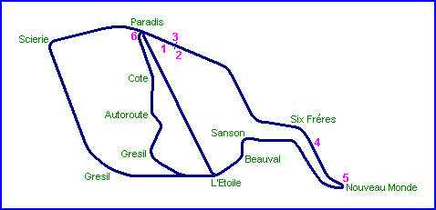
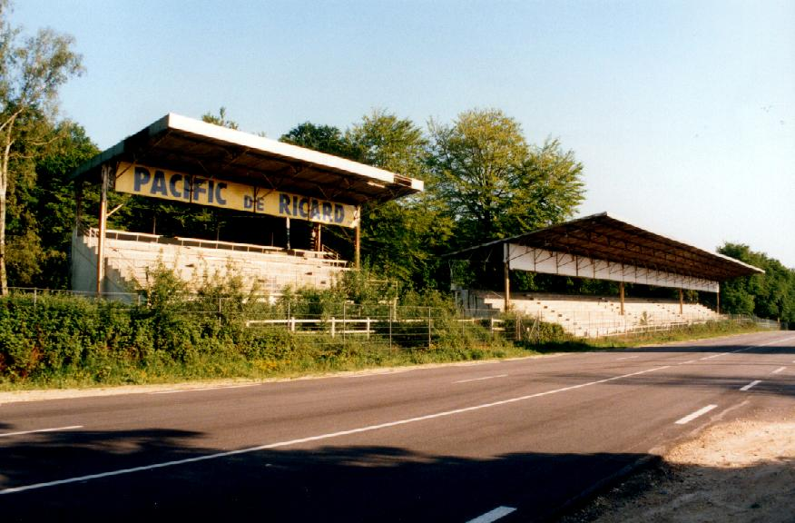

Main Grandstands
|| Contents | Timekeepers House | Pits | Grandstands | Six Fréres | Nouveau Monde | Paradis || Home ||

Return to racingcircuits.net's Historic Circuits Photo Archive Main Index



Grandstands and Paddock Arrangement Sign

Photographs ©Luc Ghys. Reproduced here with kind permission.